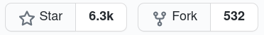
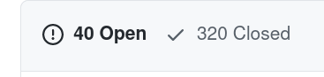

הקדמה
עד כה, יצרנו בסיס איתן בכל הנוגע לניהול git במחשב המקומי שלכם.
אף אחת מהפקודות שלמדתם לא מתקשרת עם האינטרנט.
זה אומר שכרגע אנחנו לא יודעים לשתף את המידע שב־repository שלכם עם משתמשים אחרים, או למשוך פרויקטים שנבנו על ידי אחרים.
כשנעבוד עם git במקום העבודה שלנו או כחלק מפרויקט Open Source משותף, חשוב שנהיה מסוגלים:
- להוריד את הפרויקט אלינו למחשב.
- לקבל עדכונים לפרויקט שהועלו על ידי שאר המתכנתים.
- לשלוח בקלות את הקוד שכתבנו, כך ששאר הקולגות יוכלו להוריד אותו בקלות.
הפקודות
לשמחתנו, git מכירה בחשיבות העניין, ומאפשרת לנו לשלוט בכך ב־3 פקודות פשוטות:
- הפקודה git clone מקבלת כפרמטר כתובת, ומורידה ממנה את ה־repository.
- הפקודה git pull מקבלת את כל העדכונים שהתרחשו מאז ה־git clone או ה־git pull האחרונים שנעשו.
- הפקודה git push מפיצה את כל ה־commit־ים שאתם עשיתם בתיקייה המקומית שלכם לשאר הקולגות שלכם.
איך זה עובד? – הפקודה git clone
בפקודה git clone אנחנו מבקשים מ־git להוריד פרויקט git מקישור שסיפקנו כפרמטר.
הריצו לדוגמה את הפקודה הבאה בשורת הפקודה שלכם.
הפקודה תוריד למחשב שלכם Repository שכולל את כל מחברות הפייתון של שבועות 1 עד 8.
git clone https://github.com/PythonFreeCourse/Notebooks/
אם תיכנסו לתיקייה החדשה שנוצרה (cd Notebooks) תוכלו למצוא את תיקיית .git.
אתם תראו שכל פקודות ה־git שלמדתם עד כה עובדות כרגיל (נסו, לדוגמה, להריץ git status).
אם תריצו את הפקודה git remote -v, יופיעו כפלט שתי שורות.
השורה הראשונה, שלידה כתוב fetch, היא המקור שממנו git תמשוך מידע כשנבקש ממנה לקבל עדכונים בנוגע ל־repository.
השורה השנייה, שלידה כתוב push, היא היעד שאליו git תדחוף את המידע כשנבקש ממנה לשלוח עדכונים בנוגע ל־repository.
המילה origin שנמצאת שם היא השם שניתן כברירת מחדל למיקום שממנו הורדנו את ה־repository.
במקרה שלנו, לדוגמה, origin זה שם מקוצר ל־https://github.com/PythonFreeCourse/Notebooks/.
איך זה עובד? – הפקודה git push
הפקודה git push מאפשרת לכם לדחוף לשרת עדכונים שביצעתם ב־repository.
לאחר הרצת הפקודה, השינויים שביצעתם ישלחו, והקולגות שלכם יוכלו להוריד אותם.
יש שני קאצ’ים בפקודה:
- לפני שתוכלו לעשות git push, תתבקשו לעשות git pull – להוריד אליכם את המצב העדכני של ה־repository.
- הפקודה המלאה היא:
git push origin master(או כל branch אחר שעליו אתם נמצאים במקוםmaster).
איך זה עובד? – הפקודה git pull
הפקודה git pull מאפשרת לכם למשוך עדכונים שהתבצעו ב־repository מאז שעדכנתם אותו פעם אחרונה.
היא מורכבת מ־2 חלקים:
- הפקודה
git fetch, שמורידה אליכם את מה שקורה בשרת המרוחק - הפקודה
git merge, שמנסה למזג את מה ש־git fetchהורידה למחשב שלכם עם העבודה המקומית אצלכם במחשב.
בעיה נפוצה: merge conflict
לפעמים בעקבות הפקודה git pull קורה דבר מעט לא נעים שנקרא merge conflict.
זה מצב שבו git לא בטוחה כיצד למזג את הגרסאות, והיא מבקשת את עזרתכם.
במצב כזה, דרך הפעולה המומלצת היא:
- להקליד git status, כדי לראות עבור אילו קבצים המיזוג נכשל.
- לערוך אותם. git דאגה לכתוב בתוך הקובץ איפה הקונפליקט. הסירו את השורות המיותרות.
- הוסיפו את הקבצים המתוקנים בעזרת
git add. - עשו
git commitכרגיל.
בחלק מהמערכות, הפקודה git mergetool תמצא אצלכם במחשב כלי עזר גרפי שיכול להקל על העבודה הזו.
ראו ב־Stackoverflow את השאלה “How to resolve merge conflicts in Git?”.
אתרים מרוחקים לאחסון repositories
ישנן פלטפורמות אינטרנטיות שמציעות לנו לאחסן את הפרויקטים שלנו בחינם.
דמיינו Google Photos, רק במקום פלטפורמה לשמירת התמונות שלכם – פלטפורמה לשיתוף הקוד שלכם 
מתכנתים רבים משתמשים באתרים האלו מדי יום.
לרוב, האתרים האלו משמשים לשיתוף פרויקטים שאנשים בנו – ממודולים ועד תוכני הוראה.
אנשים רבים משתמשים בהם גם כתיק עבודות, כפרופיל אישי ברשת, כמקום למצוא חתיכות קוד מעניינות ועוד.
שניים מהאתרים המובילים בתחום הם GitHub ו־GitLab.
האתר GitHub פופולרי יותר בפער ניכר.
הפלטפורמה נקנתה באוקטובר 2018 על ידי Microsoft, ולפי מדד Alexa לפופולריות של אתרים, היא נמצאת במקום ה־80 בעולם.
זה גם האתר שבו אנחנו בחרנו לאחסן את מערכת העלאת התרגילים שלנו ואת מחברות הקורס.
איך מנווטים פה?
רוב פרויקטי הקוד הפתוח המודרניים מארחים את הקוד שלהם ב־GitHub.
זה כולל מודולים פופולריים בפייתון, כמו requests, tensorflow, flask, pandas, numpy, tqdm , bokeh ועוד.
למעשה, אפילו קוד המקור של CPython עצמה (הפייתון שאנחנו משתמשים בו) נמצא ב־GitHub.
עוד פרויקטים שאולי אתם מכירים ומנוהלים ב־GitHub כוללים את VSCode ואת הפלטפורמה לקורסים חינמיים edx.
הטריק הוא לחפש בגוגל את השם של הפרויקט, כשלפניו יש את המילה GitHub. לדוגמה: GitHub VSCode.
זה נחמד כשאנחנו רוצים לתרום קוד לפרויקט מסוים, לפתוח לו באג או לעיין בקוד שלו ולהבין איך הוא בנוי.
זה גם יכול לעזור לנו להבין עד כמה הפיתוח של הפרויקט פעיל, והאם אפשר לסמוך על כך שתהיה תמיכה ועדכונים.
כשנרצה לנווט, נסתכל על 4 אזורים מרכזיים:
סרגל הניווט למעלה
{kind=link}
כאן מתחבאים מספר קישורים מעניינים:
- הקישור Code יאפשר לכם לגשת לראות את הקוד עצמו.
- הקישור Issues יאפשר לכם לראות בקשות לפיצ’רים ודיווחים על תקלים שנפתחו בידי המשתמשים.
- הקישור Pull Requests יאפשר לכם לראות תרומות קוד שממתינות לאישור.
- הקישור Insights יאפשר לכם לראות תובנות מעניינות על תרומות הקוד וקהילת המפתחים של הפרויקט.
המונח “Pull Requests” קצת מבלבל, בעיקר כיוון שאנחנו מדברים עליו כשאנחנו עושים push.
לפירוט על המונח Pull Request.
בכל פעם שתתרמו קוד לפרויקט קוד פתוח, אתם תיצרו בקשה להעלות את הקוד שלכם ל־repository המרוחק שמשותף לכולם.
הבקשה הזו מהאדם שמתחזק את ה־repository למזג את הקוד שלכם עם הקוד הקיים נקראת “pull request” (ולא “push request”), כיוון שאתם (כביכול) מבקשים מאנשים אחרים למשוך את הקוד שלכם.
זה שם לא מוצלח, אבל זה מה יש
לשונית הקוד
{kind=link}
התמונה היא מתוך פרויקט LMS.
- בצד שמאל העליון אנחנו יכולים לבחור על איזה branch להסתכל.
- בצד ימין, אם תלחצו על הכפתור הירוק “Code”, תקבלו קישורים להורדת הפרויקט (כ־zip או בעזרת git clone).
- בראש הרשימה אנחנו יכולים לראות את האדם האחרון שתרם קוד לפרויקט, את מספר ה־commit ואת כמות ה־commit־ים שהתבצעו בפרויקט תחת ה־branch.
- בהמשך אפשר לראות את הקבצים עצמם.
- אם נמשיך לגלול למטה, נראה את קובץ ה־README של הפרויקט, שלרוב מסביר כיצד להתקין אותו ומראה דוגמאות לשימוש בו.
מדדים ל־repository איכותי ב־GitHub
בבואנו להעריך האם אנחנו רוצים להשתמש במודול מסוים או בקוד שמצאנו ב־GitHub, נסתכל על כמה סימנים מעניינים:

- כמות ה־Stars של הפרויקט: כמה אלפים זה מצוין, מאות זה טוב, עשרות זה מפוקפק.
- כמות ה־Fork־ים. זה מראה כמה אנשים יצרו פרויקט על בסיס הפרויקט הנוכחי – בד"כ כדי לתרום לפרויקט
- מתי הייתה התרומה האחרונה? אם לפני יותר מכמה חודשים, נראה שהפרויקט לא מתוחזק יותר. שווה לבדוק אם יש פרויקטים עדכניים יותר.
- כמה Commit־ים התבצעו לפרויקט? – מספר גדול בדרך כלל מראה על יותר בשלות.
- כמה Issue־ים פתוחים יש? האם מטפלים ב־Issue־ים או שהם נשארים פתוחים?

תרגיל 1: צעדים ראשונים
- פתחו לעצמכם פרופיל ב־GitHub, אם עדיין אין לכם כזה.
- צרו repo חדש והעלו את מערכת wit שלכם ל־GitHub.
- (רשות) יעזור לתפוצת הקורס – סמנו כוכב ב־Repo־ים שלנו: מחברות הקורס והמערכת לבדיקת תרגילים.
היעזרו במדריך הזה, אם יש צורך.
צרפו לפתרון התרגיל את הקישור ל־repository שיצרתם ב־GitHub.
תרגיל 2: התמודדות עם עבודה מרוחקת
התרגיל הזה מומלץ מאוד, אבל לא חובה להגיש אותו.
השלימו את תרגילים 1 ו־2 בעמוד הבא:
מקורות לימוד נוספים
-
ספר אונליין על Git. אם תבחרו לקרוא רק דבר אחד, זה צריך להיות זה.
ממליץ בחום לקרוא את 6 הפרקים הראשונים כדי לצלוח את הנושא ברמת ידע גבוהה. - עוד מקור מפורט מאוד, ספר שלוקח את זה צעד צעד בנושאי git.
- קורס אונלייני שמסכם את מה שלמדנו השבוע.
- איך עובדים עם GitHub?
- איך נכון לעבוד ב־git עם אנשים בצוות (מתקדם)
- אתר שמרכז מקורות מידע בנוגע לעבודה עם Git.
- כבר נתתי לזה קישור בעבר, אבל עדיין, זו ההרצאה הכי טובה שראיתי על git.